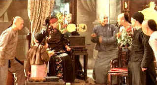

| Shadow
Magic (SE) /A-,B+ |
| Columbia/1999/115/ANA 1.85 |
Richly evocative of turn-of-the-century Peking, Shadow Magic is a wondrous
depiction of the first talking picture exhibition in China. The magic of technology is given center
stage accompanied by a lovely romantic coda.
Raymond Wallace arrives in Peking to earn money by presenting the latest
Western innovation, motion pictures. Liu Jing Lun is the prize employee of master photographer Ren.
Wallace stumbles on a very special photo shoot as the city's legendary Peking Opera star, Lord Tan,
arrives at the photo studio to record his image for posterity. Liu is captivated
by the beautiful daughter of Lord Tan. The main players are introduced in
this old world setting as new technology butts heads with tradition.
 |
| A wondrously enthusiastic performance.
©Columbia |
Liu is fascinated by the new inventions of the West. When Wallace opens a
make-shift movie house, Liu discovers another passion, moving pictures. Liu's determination forges
with Wallace's knowledge to bring Shadow Magic to the cynical Chinese. A
cultural collision ensues that is sure to ignite fireworks.
A wonderful debut for writer/director Ann Hu. There's nary a false step in the
storytelling. Gleeful innocence and sly cynicism are exercised with equal
insight. Hu has chosen a team of talented players. Lida Zhang's musical score brilliantly captures elements of old and new.
Cinematographer Nancy Schreiber paints with light to startling effect. Color images fade to black
and white, dusty streets come to life propped up by streaks of light. Director Hu has acknowledged
that she and Schreiber butted heads but that when the stunning rushes were previewed she was awed
by her photographer's talent.
Yu Xia is absolutely fabulous as Liu. Xia invigorates
Liu with boundless energy and enthusiasm. His smile is worth a thousand images
Jared Harris is a fine choice as Wallace. He's gruff, raw, with a touch of desperation.
The cast of supporting players disappear into the world created by Hu.
Shadow Magic is a special treat for movie
lovers. A glimpse into the past of something we treasure dearly is not to be
missed.
The beautiful photography is handsomely replicated on
this DVD special edition. Colors are delicate, the dust misted streets glow
with sunlight. Shadow detail is excellent. Details are lovingly transferred in
sharp images. Overall consistency is a hallmark of this excellent DVD. Dolby Digital 2 channel surround is very open capturing the bustling streets
and the lovely musical chords with equal aplomb. Removable yellow English subtitles are presented
over the image. Unfortunately, there is also a good deal of English spoken in the film and the
titles appear then also. It detracts from the charm of those moments. More care could have
extracted all the subtlety of Shadow Magic.
Ann Hu's precise commentary is offered as the heart of this
special edition. Hu describes the background of the project and difficulties
in getting it off the ground.
|
|
|
|

Selections from the Feature Archive
include articles on Akira Kurosawa, Frank
Darabont, Blonde Bimbos, Hollywood Street Gangs, or Vietnam: The
Hollywood Pariah, and many more....
Capturing Kennedy

Steven Culp extracts the
essence of Robert F. Kennedy in Roger Donaldson's outstanding feature Thirteen Days. Culp recently shared
insights on the performance and his career with Films on Disc. Click the image for more.

Not
One Less
 In a remote
Chinese village a 13 year old Chinese girl takes determination to the limits. From master filmmaker
Zhang Yimou. In a remote
Chinese village a 13 year old Chinese girl takes determination to the limits. From master filmmaker
Zhang Yimou.

DVD packaging can be the bane of the collector. Click on Rants and
Raves for more.
The DVD Package
 . .
The
Movie Poster Archive includes extensive poster images from the films of stars like Susan Hayward,
Kirk Douglas, Katharine Hepburn and many more. Our featured star is John
Wayne

 Have you visited Home Theater
Talk lately? One of the friendliest places on the Net for Home Theater and DVD discussion, you
can get help for installation problems or simply share your opinions with other
Vidiots. Have you visited Home Theater
Talk lately? One of the friendliest places on the Net for Home Theater and DVD discussion, you
can get help for installation problems or simply share your opinions with other
Vidiots.
 Kinoeye Archive Kinoeye Archive
This is a resource of all content-rich
materials on the web relating to Central and East European cinema. The ultimate aim of the Kinoeye
Archive is to provide a near-as-damn-it definitive index of intelligent and thoughtful
English-language analysis of Central and Eastern European cinema on the web.
 Gary Morris's insightful publication Bright Lights
Film Journal turns the celluloid in films from a unique perspective. Click on the image above
for more pure movie views. Gary Morris's insightful publication Bright Lights
Film Journal turns the celluloid in films from a unique perspective. Click on the image above
for more pure movie views.
|